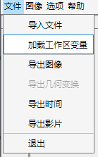
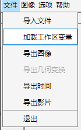

1.1.2 加载工作区变量
 单击文件，选择加载工作区变量，在数据选择器中选择工作区变量，选择结束后单击关闭。 注：此方式用于处理部分图像信息与图像数据分离，或特殊图像数据格式的情况。对于图像参数缺失，可运行optsHelper.mlx实时脚本以手动生成参数表。

单击文件，选择加载工作区变量，在数据选择器中选择工作区变量，选择结束后单击关闭。
注：此方式用于处理部分图像信息与图像数据分离，或特殊图像数据格式的情况。对于图像参数缺失，可运行optsHelper.mlx实时脚本以手动生成参数表。